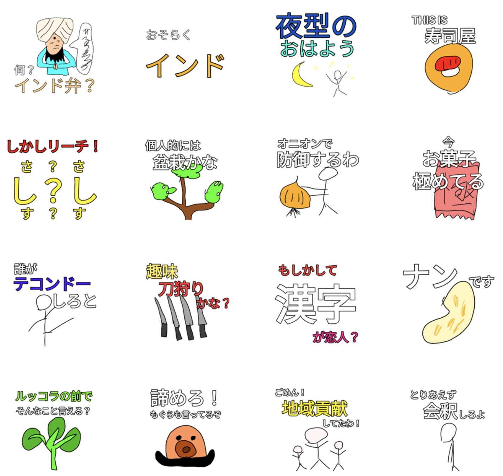
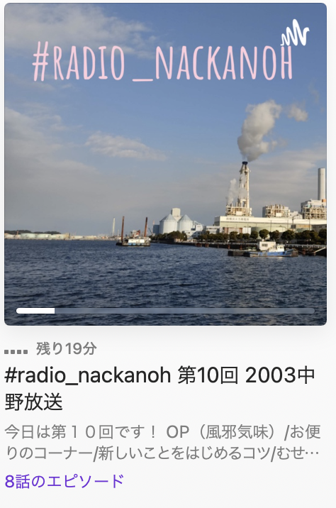
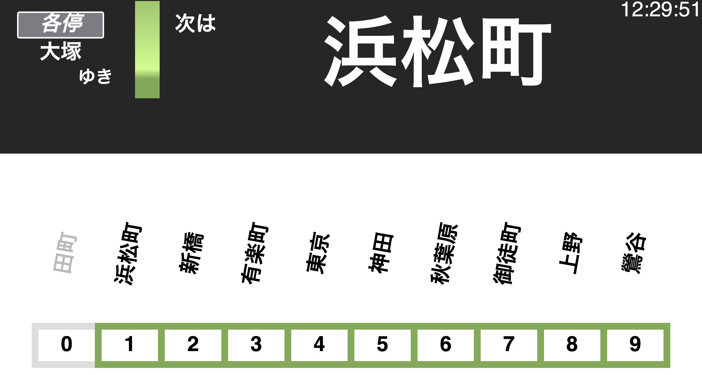
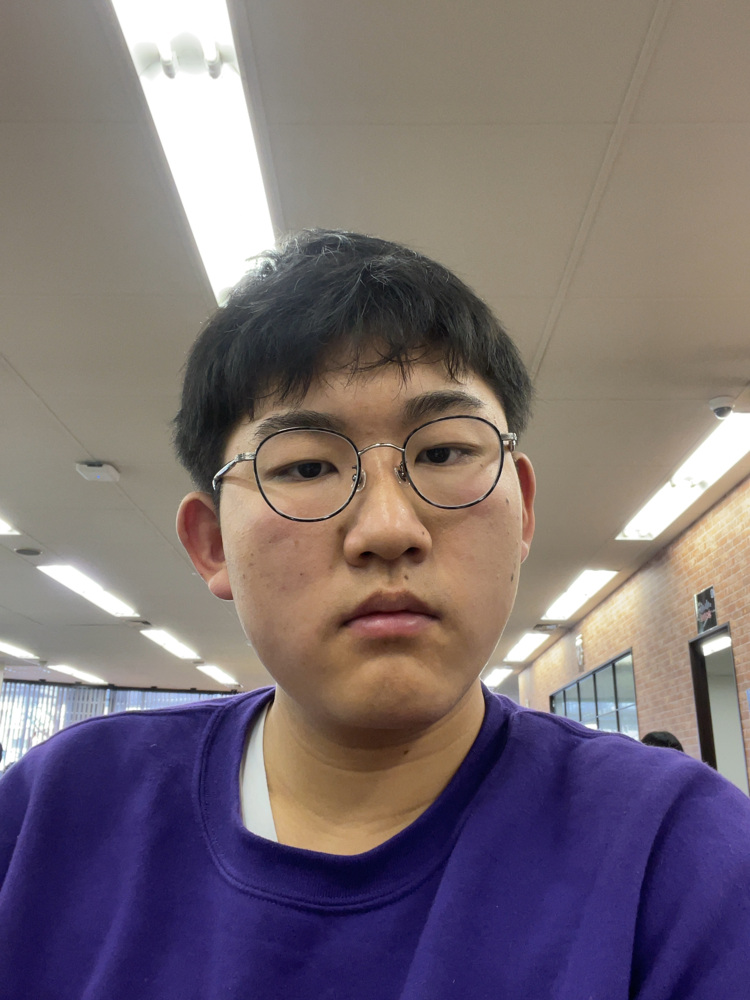

WORKS
中野語録スタンプ
ibis Paint
LINEスタンプとして販売している。
約200個のスタンプを作成。
2003 中野放送
Garageband,Audacityなど
なっかのう（私）がお送りする架空のラジオ番組風のPodcast。
第10回まで完成しており、独自の「架空CM」「架空お便り」など、内容にもこだわっている。
ほとんどのジングルは自作。
鉄道ポモドーロタイマーv3
HTML/CSS/JS
高校1年から作り続けているアプリで、鉄道の停車駅で時間がわかるという仕組み。
リアルを追求した結果、本物と遜色ないデザインにできた。
実用性が高い中野史上最高傑作。
PROFILE

なっかのう
本名：中野 平慈(なかの へいじ)
生年月日：2003年11月20日
出身地：神奈川県横浜市
生まれ、育ちが横浜の学生。
昔から絵を描く時間に字ばかりを書くタイプで、
自分で紙に書いてボードゲームなどを作っていた。
小学6年の時、初めてHTMLを触り、プログラミングに目覚める。
ふと思いついた時に、「これはプログラムにしたらどうなるだろう」
ということを考えていた。
中学三年の時、Javascriptを触り始める。
中学高校Webデザインコンテストでは、
部内唯一javascriptがわかる人としてトップ50に上り詰めた。
その後、2019年(高一)でN高等学校に入学し、
将来は中国語を生かせる仕事やWEB系の仕事に就職したいと考え中。
SKILL
Languege
日本語
母国語。中国語
中国語検定3級。筆談での会話、自己紹介、簡単な会話はできます。英語
英検3級。中国語より少し苦手です。Web
HTML
ほとんどのタグはわかるが、HTML5の「canvas」は未学習。CSS
基本的な動作はわかるレベル。Javascript
プレーンなjavascirptはほぼ理解したものの、jqueryやnode.jsなどはまだ触り始め。
Programing
Python
基本の動作がわかるレベル。機械学習はわからない。Other
Adobe XD
基本の動作がわかるレベル。ページ遷移、ポップアップはできる。Illustrator
基本の動作がわかるレベル。高度な絵はかけない。Photoshop
基本の動作がわかるレベル。簡単なチラシくらいなら作れる。
Office
基本の操作と関数はわかっていてVLOOKUP関数が触れるレベル。HISTORY
2003
- 横浜市で生まれる。
2013
- 10歳、初めてパソコンに触れる。
2015
- 12歳、HTMLを初めて触る。
2016
- 13歳、CSSを初めて触る。
- 中学のパソコン部に入部。
- 中学高校Webデザインコンテストトップ50。
2017
- 中学高校Webデザインコンテストトップ50。
2018
- 14歳、Javascript、pythonを初めて触る。
- 中学高校Webデザインコンテストトップ50。
2019
- 15歳、中学卒業後にN高等学校に入学。
- 釣具のキャスティング横浜磯子店にてアルバイト。(継続中)
- N高で超会議、NEDなどのイベントに参加。
- qiitaを開始。初投稿。
- Nakano's portfolioを作成。
2020
- 株式会社エバーバンクにて4ヶ月間インターンアルバイトを経験。
- 中国語検定4級取得。
- Nakano's portfolioを更新、2020の年度表記を追加。
2021-
- 6月に中国語検定3級取得。
- 関東学院大学人間共生学部コミュニケーション学科に合格。
- Nakano's portfolio2022を作成。